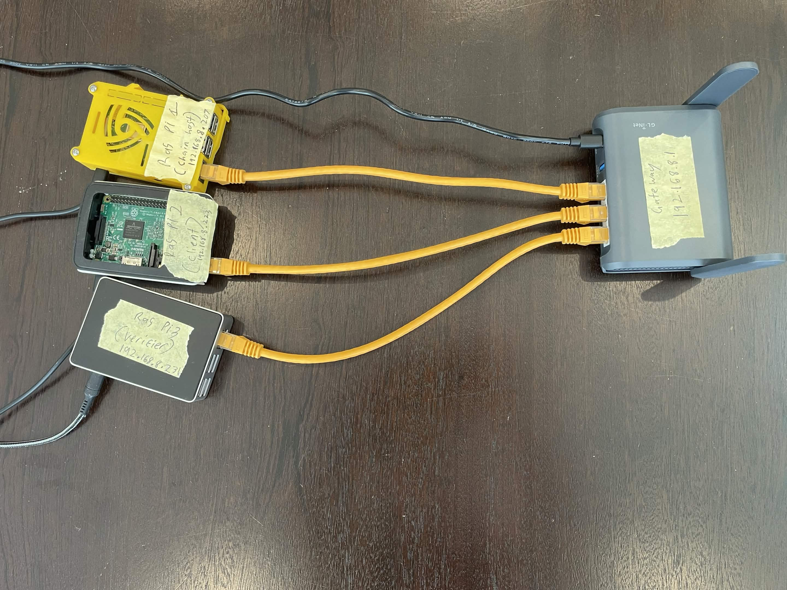
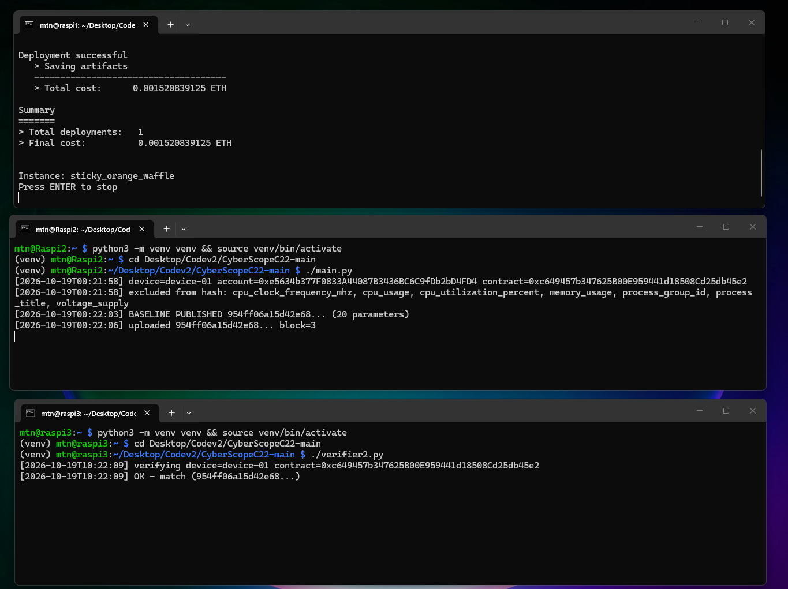
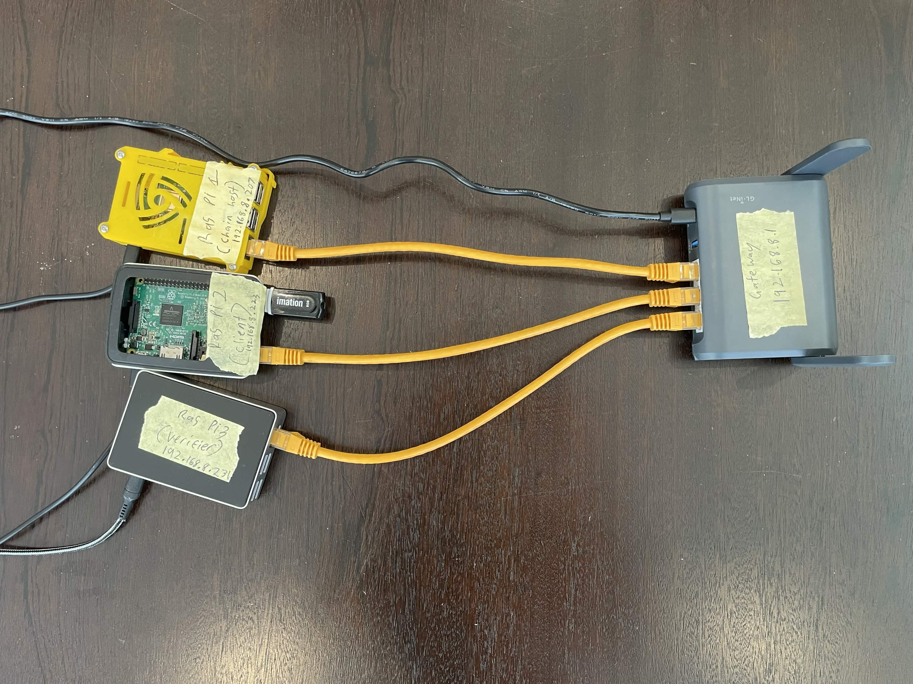
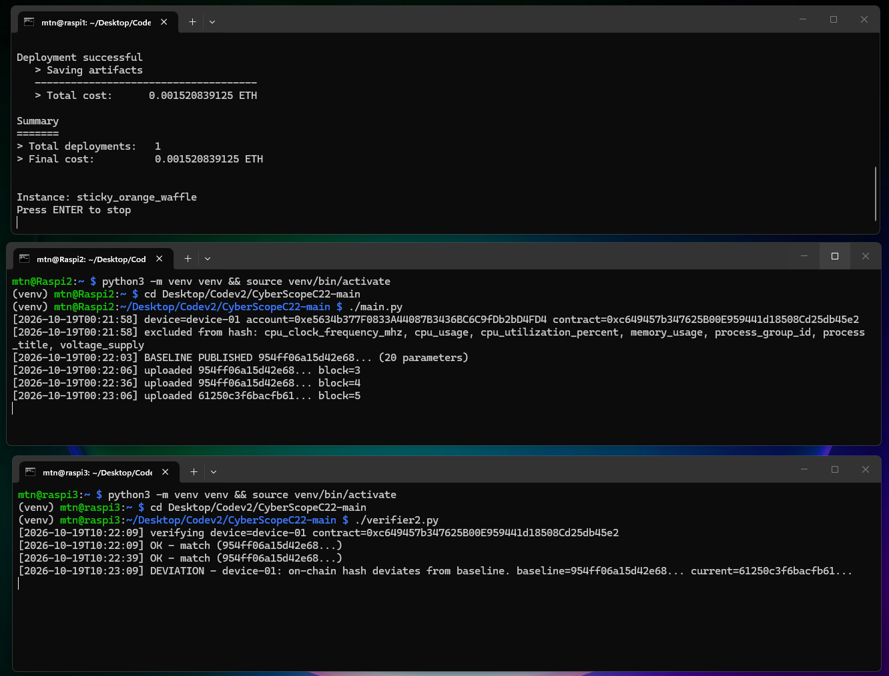
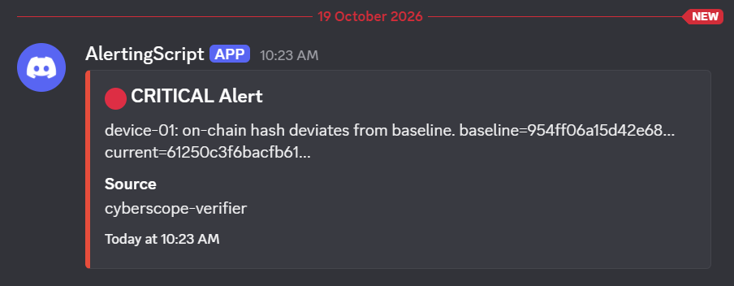
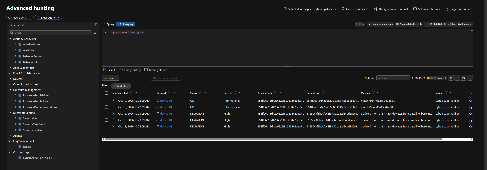
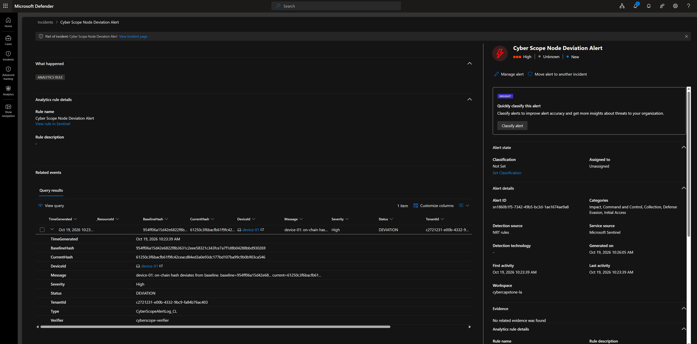

IoT device integrity attestation
cannot see belowthe IT/OT boundary.
struggle with detectionand response.
Findings from Dragos’s OT assessments and exercises;not a survey of all ICS owners.
Collect → hash → compare → decide






